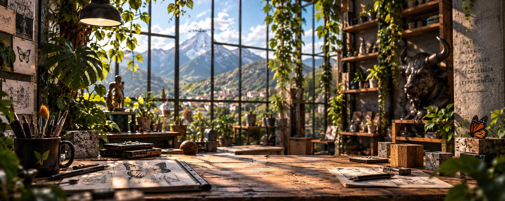
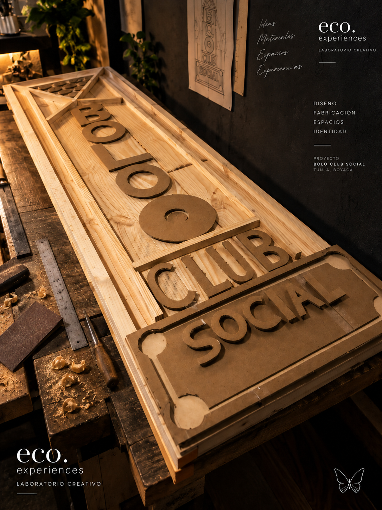
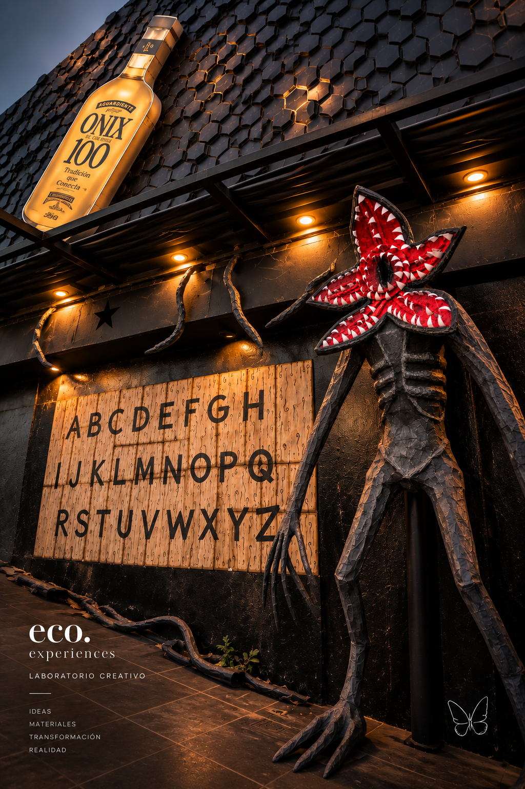
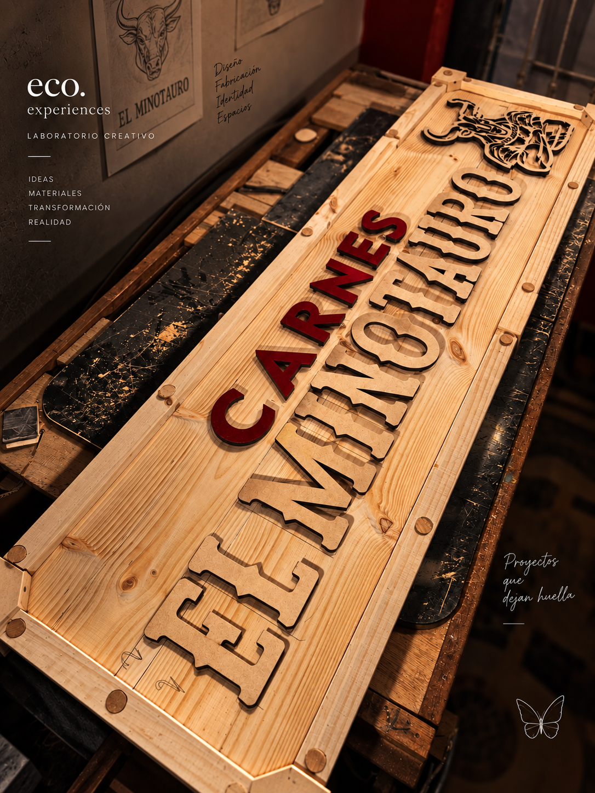

TALENTO
Encontramos y seleccionamos personas con la capacidad adecuada para cada reto.

DISEÑO · ARTE · OBJETOS · ESPACIOS · EXPERIENCIAS
Un laboratorio creativo que conecta talento, diseño, materiales y tecnología para transformar ideas en experiencias.
MÁS QUE UN TALLER
Somos un laboratorio creativo que conecta talento, diseño, materiales y tecnología para transformar necesidades, ideas y sueños en proyectos reales.
No partimos de una solución prefabricada. Partimos de una idea. Escuchamos, exploramos, combinamos y encontramos el camino adecuado para cada proyecto.
02 / LO QUE CONECTAMOS
Seleccionamos el talento adecuado, exploramos materiales, desarrollamos conceptos e integramos herramientas digitales e IA de manera inteligente.
Encontramos y seleccionamos personas con la capacidad adecuada para cada reto.
Convertimos necesidades e ideas en conceptos, propuestas y soluciones.
Elegimos materiales según función, estética, resistencia y resultado.
Usamos herramientas digitales e IA para explorar, diseñar y optimizar.
03 / PROYECTOS DESTACADOS
DISEÑO · FABRICACIÓN · EXPERIENCIA




DISEÑO INDUSTRIAL
Objetos, mobiliario, señalética y piezas especiales. Diseñamos pensando en cómo se construyen, cómo funcionan y cómo permanecen.
DISEÑO GRÁFICO & DIGITAL
Identidad visual, piezas gráficas, renders y exploraciones visuales para llevar una idea desde el concepto hasta una presentación que pueda sentirse.
UN LABORATORIO
La experiencia final nace cuando las piezas correctas encuentran el momento correcto.
05 / ECO.TRONIC
ECO.TRONIC acompaña al cliente desde la primera idea. Interpreta lo que necesita, organiza la información y construye la comanda que entra a ECO.LAB.
06 / ECO.LAB
No necesitas saber exactamente qué necesitas. Cuéntanos qué quieres hacer y buscamos contigo el camino.
07 / LO QUE VIENE
Construimos progresivamente una red donde ideas, talento, equipos, materiales y tecnología puedan encontrarse.
Tu idea entra aquí.
ACTIVOLa red de talento.
PRÓXIMAMENTE · 🔒Equipos para cada proyecto.
PRÓXIMAMENTE · 🔒Objetos, ediciones y colaboraciones.
EN DESARROLLOAHORA TE TOCA A TI
Una idea, un proyecto, una colaboración o algo que todavía no sabes cómo explicar.
¿TIENES UNA IDEA?
No necesitas tener todo resuelto. Cuéntanos qué quieres crear y encontramos contigo el camino.